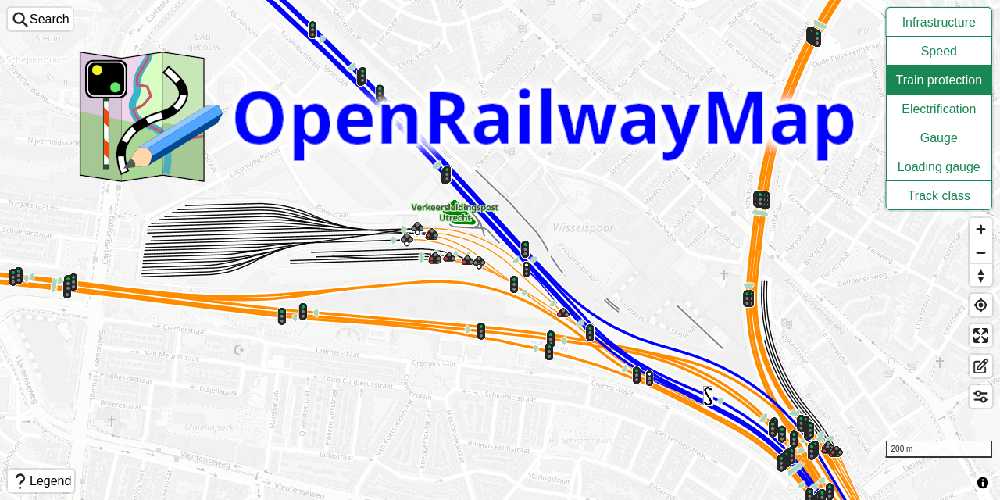

Welcome to the OpenRailwayMap!
This project shows railway infrastructure, speed limits, train protection, electrification and railway gauges of present and historical railway data using OpenStreetMap and OpenHistoricalMap data for all around the world.
Suggestions, improvements and discussions are welcome! You can find the project homepage of the OpenRailwayMap on Github. Start a discussion on the Discussions page on Github, or create an issue in the Issue tracker on Github. It is possible to contribute improvements directly by creating a Pull Request on Github. Be sure to read the contributing instructions. Alternatively, it is possible to contact the author directly using email.
Documentation about the OpenStreetMap data can be found on the OpenRailwayMap wiki pages.